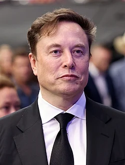

SpaceX
Aims to revolutionize space technology, reducing cost of travel, developing reusable rockets (Falcon, Starship), building the Starlink satellite internet constellation, and enabling human settlement on Mars.
Elon Musk is one of the most influential entrepreneurs and innovators of the 21st century. He is known for his bold ideas, futuristic vision, and determination to solve some of the world’s biggest problems through science and technology. Born on 28 June 1971 in Pretoria, South Africa, Elon Musk showed an early interest in computers and technology. At a young age, he taught himself programming and created his first video game, showing signs of his exceptional creativity and intelligence.
Elon Musk later moved to the United States to pursue higher education and bigger opportunities. Over the years, he founded and led several groundbreaking companies. He is the CEO of Tesla, which focuses on electric vehicles and clean energy, and SpaceX, a company working to make space travel affordable and eventually enable humans to live on other planets. He has also been associated with companies like PayPal, Neuralink, and The Boring Company.
What makes Elon Musk unique is his willingness to take risks and think beyond traditional limits. Despite facing failures and criticism, he continues to innovate with confidence and perseverance. Elon Musk inspires millions of young people around the world to dream big, work hard, and use technology for the betterment of humanity.

Aims to revolutionize space technology, reducing cost of travel, developing reusable rockets (Falcon, Starship), building the Starlink satellite internet constellation, and enabling human settlement on Mars.
Focuses on electric vehicles, energy storage (Powerwall), and solar power, accelerating the world's transition to sustainable energy.
Acquired and rebranded the social media platform, transforming it into a broad "everything app".
SpaceX's satellite internet constellation providing broadband to underserved areas globally.
"When something is important enough, you do it even if the odds are not in your favor" ~ Elon Musk
"Failure is an option here. If things are not failing, you are not innovating enough" ~ Elon Musk